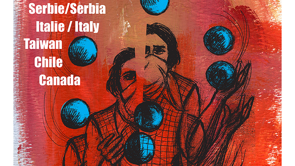
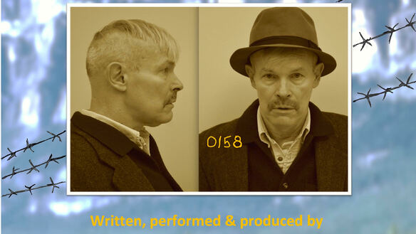
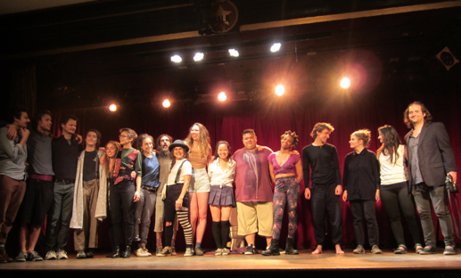

-
Le 15e festival de théâtre anarchiste de Montréal sera virtuel du 17 au 24 mai 2022
21 April 2022
Le 15e festival de théâtre anarchiste de Montréal sera virtuel du 17 au 24 mai 2022
-
Du 11 au 17 décembre sur Youtube: 'Run Nawrocki Run! Escape from Banff Prison’
03 December 2021
“Run Nawrocki Run” raconte l’histoire peu connue, mais honteuse et vraie de la Première Guerre mondiale, de l’incarcération et de l’exploitation de 9 000 immigrants ukrainiens canadiens pauvres et sans emploi dans l’un des 24 camps de travaux forcés du pays.
-
Le 15ème Festival international de théâtre anarchiste de Montréal recherche des pieces !
08 September 2021
 English
English